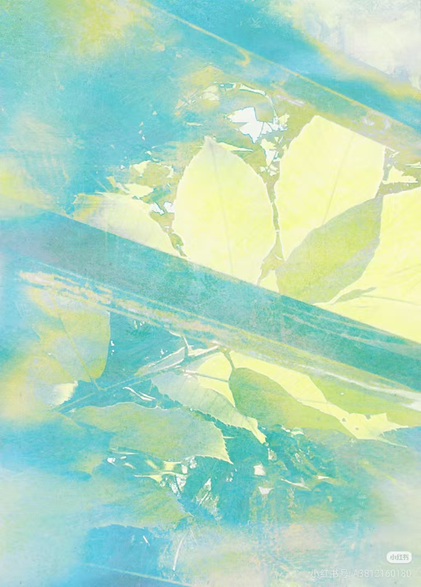
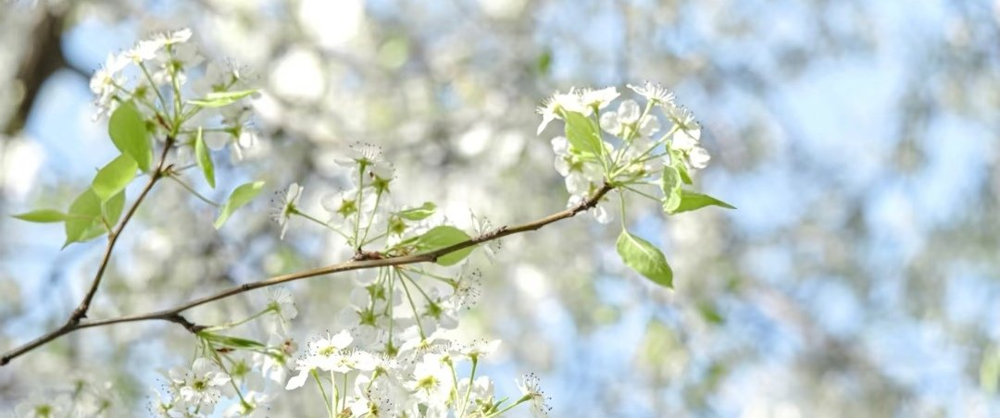
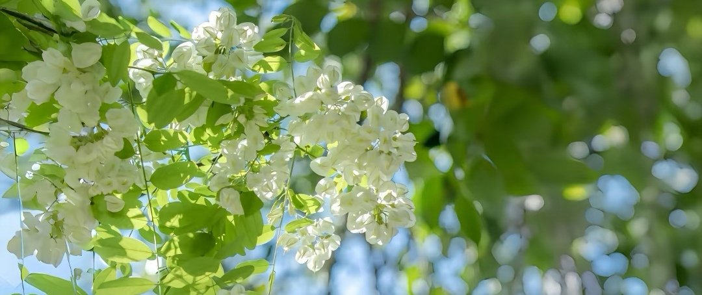

Green Archive
这里收着 summer 的一点信号：一句话、一张图、一段盛夏。鼠尾草绿配米黄纸，像夏日午后被风吹过的窗。
它是一个小小的提醒架：细腻的你，也有自己的珍贵；我们共振过的夏天，约等于永远。
- 档案编号
- GA-2026-09
- 馆主
- summer · ENFP / 常驻耳巫 / 病恋学习中
- 风格一览
- 年上高恋 / 温柔引导 / 动描·微擦
- 收录内容
- 盛夏 / 关于我 / 须知 / 话术 / 板评 / 卡类
- 状态
- 常驻 · 在线 · 盛夏长明

关于我 · 溪水慢流这里收着 summer 的一点信号：一句话、一张图、一段盛夏。鼠尾草绿配米黄纸，像夏日午后被风吹过的窗。
它是一个小小的提醒架：细腻的你，也有自己的珍贵；我们共振过的夏天，约等于永远。

 卡类 · 两颗心，合二为一 →
卡类 · 两颗心，合二为一 →
the quiet botanical bureau — 慢一点，也没关系
盛夏 · 心向于你 板评 · 来自星星的评价卡类 · 两颗心合二为一
板评 · 来自星星的评价卡类 · 两颗心合二为一— made by yw-iris 🌿
＞＞＞ Summer/ 常驻团9 · 现在团9 · ENFP · 常驻耳巫。
病恋正在学习中，师从月渎 —— 我永远热爱那个盛夏。

First love is snow, blue, and the selfless passion. 盛夏很长，愿意慢慢陪你走完这一程。
有不喜或喜欢的风格请提前告知 · 我们共振过的夏天约等于永远 · 心怎么变，都是偏向你
＞＞＞ 我们共振过的夏天约等于永远 ＜＜＜

心怎么变，都是偏向你。盛夏很长，愿意慢慢陪你走完这一程。
有不喜或喜欢的风格请提前告知 · 我们共振过的夏天约等于永远 · 心怎么变，都是偏向你
＞＞＞ 盛夏很小，规矩很轻：尊重 · 双向 · 不越界。
下单默认已读 ↑
＞＞＞ 我们共振过的夏天约等于永远，
盛夏的每一句话，都偏向你。
话术正在整理中，敬请期待。
盛夏的絮语稍后来临 —— 心怎么变，都是偏向你。
＞＞＞ 每一条评价，都是一次盛夏共振的回声。
板评正在收集中，等你来写第一条。
盛夏长明，感谢每一次相遇。
＞＞＞ 必须经过漫长の旅程，两颗心才能合二为一。

盛夏很长，愿意慢慢陪你走完这一程。
必须经过漫长の旅程，两颗心才能合二为一 · 心怎么变都是偏向你 · 收件人一栏，留给你
盛夏的灯一直亮着，座位会留着。
下一个名字，留给你。